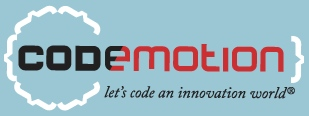

Express.js nos provee de un framework para producir aplicaciones web absurdamente rápidas (en cuanto a ejecución en el servidor. Usa node.js)
Knockout.js nos ofrece un mecanismo de vista-modelo para hacer que nuestras aplicaciones pidan al servidor sólamente los datos justos (siempre de manera asíncrona) y podamos enlazar esos datos a nuestra página de una manera muy potente y cómoda.
Zombie.js nos da un entorno de pruebas "full-stack", es decir, podemos testear nuestra aplicación desde la parte de cliente hasta el servidor, como si estuviésemos sentados realizando las pruebas en el navegador.
The focus of Java EE 7 is on the cloud, and specifically it aims to bring Platform-as-a-Service providers and application developers together so that portable applications can be deployed on any cloud infrastructure and reap all its benefits in terms of scalability, elasticity, multitenancy, etc. The existing specifications in the platform such as JPA, Servlets, EJB, and others will be updated to meet these requirements.
Durante esta charla se contrastará este modelo con un caso real basado en Guice para la inyección de dependencias, Jersey para el interfaz REST y AppEngine como servidor de aplicaciones en la nube.
(Intermedia) Julien Castelain y Denis Ciccale
Una SPA (Aplicación monopágina) es una aplicación web que se construye con una única página, con el objetivo de proveer un comportamiento parecido a una aplicación de escritorio. Con la llegada de Backbone (uno de tantos Frameworks MVC para JavaScript) es posible crear aplicaciones bajo el patrón MVC en el cliente.
(Introducción) Sofía Swidarowicz
El propósito del taller es introducir precisamente a los usuarios una de las herramientas más usadas a la hora de desarrollar dichas aplicaciones o videojuegos (especialmente para iPhone) llamado Cocos2D.
Como integrar en un proyecto la automatización del unit testing en el proceso de integración continua utilizando JsTestDriver y Sinon.js. Explicación como funciona JsTestDriver Explicación partes más importantes de Sinon.js Explicación problemática en un equipo mediano/grande Explicación soluciones.
Symfony2 consiste en un conjunto de componentes y librerías externas, totalmente independientes entre sí, que todas ellas en conjunto, forman uno de los ecosistemas más completos en el mundo PHP.
(Intermedia) Manuel de la Peña
With the introduction of the new SL4A (Scripting Layer for Android) python and other scripting languages are supported on Android. This opens a new platform for python developers that can take advantage of their preferred language and a widely used platform. In this talk we will give an introduction of android development from doing small propotypes and applications to packaging and distributing them. Some advance topics will be touch such as looking into the AndroidFacade and AndroidProxy in order to extend the current functionality exposed by SL4A.
(Introducción) Desarrollo iPhone
(Introducción) Todo Microsoft Kinect en 45 minutos
(Intermedia) APIs REST usables
(Intermedia) CouchDB y la computación distribuida voluntaria